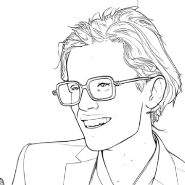

Пой ноты, которые плывут по нотной дорожке, — на каждой подписано, какая это нота. Линия твоего голоса сразу покажет, попадаешь ли ты.
Упражнение
Голос
Тональность
Песня
Всё считается на твоём устройстве — песня никуда не отправляется. Не закрывай страницу.
Нужно спеть
—
Ты поёшь
—
Точность
—
Масштаб 100%в ноте (±35 центов, на коротких нотах ±50)вышениже

♪♫♪
Учитель
💬 Спроси учителя
Мой прогресс
Каждый проход от 10 секунд сохраняется сам — даже если остановишь его на середине — с записью голоса, результатом и датой. Записи хранятся только в этом браузере на этом устройстве (на телефоне будет своя история). Чтобы перенести или не потерять — «Скачать мои записи», а на другом устройстве «Загрузить».
Сравнение
🎧 Сначала — нота-ориентир
Сейчас прозвучит первая нота упражнения — запомни её и ориентируйся на неё. Сразу за ней отсчёт: раз, два, три, четыре — и поехали.
🎧 Надень наушники — иначе микрофон слышит пианино. Лучше проводные; с Bluetooth говори в микрофон компьютера/телефона, а не наушников (задержку наушников тренажёр учтёт сам после первого прохода). Начало ноты не считается (даём 0,1 с на атаку). Засчитывается только точная нота в нужной октаве — если поёшь на октаву выше или ниже, тренажёр подскажет.